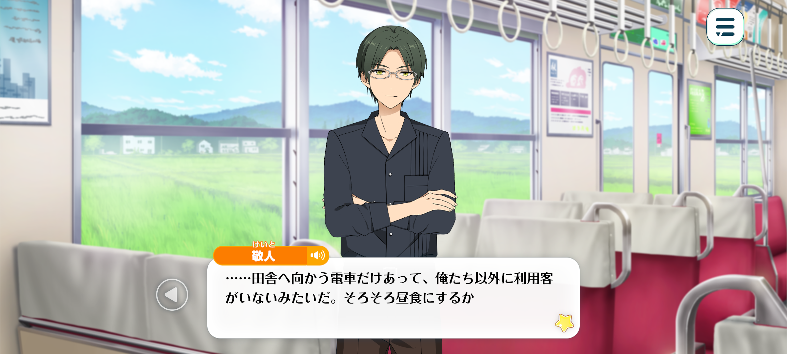
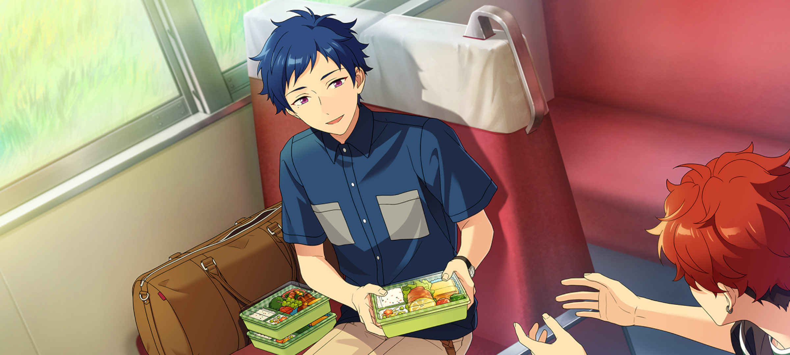
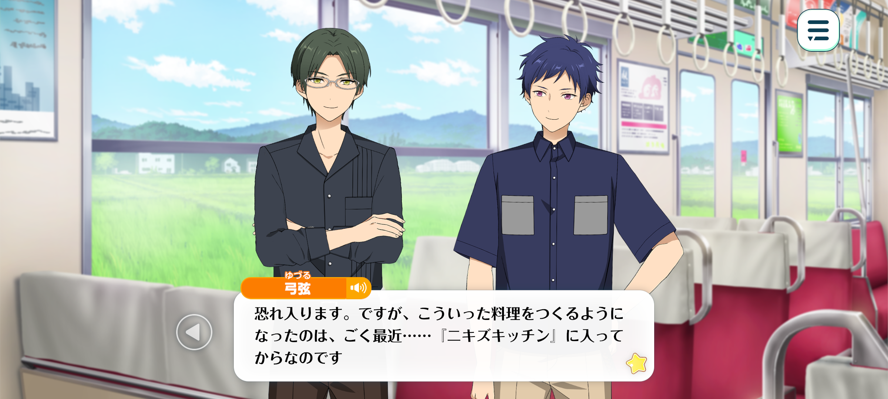
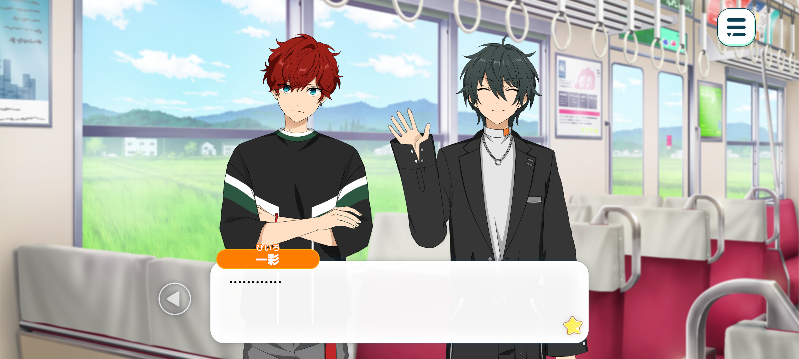

Scout! Keito Lecture
Summer Foam – Chapter 4


Time: A little while after changing trains

Keito: …It seems we're the only ones heading out to the countryside. Shall we have lunch?
Yuzuru: Certainly. I'll get everything ready at once.

This one is for you, Hiiro-sama.
Hiiro: Thank you. It's amazing that you've made bentos for all five of us. I really respect you for that!
Yuzuru: I'm glad you think so. Shiratori-sama, please, this one is yours.
Aira: Uwahh! Thank you so much! ♪
…Huh? Mine's a little different from Hiro-kun's…
Hiiro: I don't think ours are the only ones that are different. Kagehira-senpai's bento is completely burnt?
Yuzuru: Before preparing them, I asked each of you what your favourite foods were. Do you remember?
They're not all that different, of course. I simply did my best to tailor each bento to your individual tastes. ♪
Keito: So you burnt Kagehira's bento on purpose?
Mika: I like that half-burnt kinda food you get when a beginner messes up.
Mmmm… Yep, this is delicious! Just the right amount of bitterness. It's perfect! ♪
This is the best bento I've ever had. Thanks a bunch, Yukkun~!
Yuzuru: To be quite honest, I was rather taken aback when I first heard your request. I'm honoured that I've been able to make something that satisfies your tastes.
How is everyone else's? I do hope they are to your liking…
Keito: No complaints here. This is excellent. You're a capable cook, Fushimi, so I had no doubt the food would be good.

Yuzuru: You're too kind. I wasn't always able to prepare dishes like these. It was only after I joined Niki's Kitchen that I learnt how.
Until then, I only ever made bentos for Bocchama. He wouldn't eat them if they weren't flavourful.
Of course, ensuring he received the proper nutrition was always my highest priority, so I have no regrets about that.
However, when it came to balancing nutrition and flavour, Bocchama would always favour the latter.
After joining Niki's Kitchen, I realised there was no need to compromise between the two. By carefully planning and refining my ideas, I could create recipes that were both nutritious and delicious.
Thanks to Shiina-sama's guidance, I've been able to see Bocchama enjoying his meals with a smile.
And that's not all. I've also learnt to make dishes that people other than Bocchama can enjoy.
I mustn't become complacent, though. I shall continue to work hard and strive to improve.
Aira: Nom, nom… It's so delicious, though! I reckon you've earned the right to get a little big-headed about it!
I mean, I definitely would. I'd be plastering it all over social media with a million hashtags.
…Waaah, darn it! Fushimi-senpai made this by hand, but I ate the whole thing before I could even take a picture!
Hiiro: I haven't eaten mine yet, so you can take a picture of it.
Aira: No, that's not very rabui. The important thing is to take a picture of my own!
For peace of mind, I'll take a picture of Hiro-kun eating his bento instead. Ah, is it all right if I upload this?
Hiiro: Of course. Is me eating a bento considered “rabui”?
Aira: For Hiro-kun's fans, it is! Candid photos are great. They're an otaku's favourite thing…♪
Mika: Fufu. Now that I've finished eatin', I'm thinkin' I might take a picture too.
Would ya call this a “rural landscape”? D'ya think Oshi-san'll like it?
…? …Gahh, I'm no good at this. It's all blurry!
Keito: If you're going to struggle with it, why not record a video instead? It's harder to get a blurry shot that way, and you can record your voice at the same time.
Mika: Nnna, good idea! Lemme just switch modes, and…
Oshi-san, can ya hear this~? It's me~…♪

Hiiro: Thank you for the meal. Hm, I'll take a picture too. One for Tatsumi-senpai and—
…
Yuzuru: Is something the matter, Hiiro-sama?
Hiiro: No… I was just so caught up in our conversation and eating lunch that I hadn't noticed how beautiful the scenery was.
We're not even that far from the city, but the scenery has changed so much. It's completely different from my hometown. I hadn't really realised just how big Japan is.
I wonder what sort of place we'll be camping at. I'm really looking forward to it.